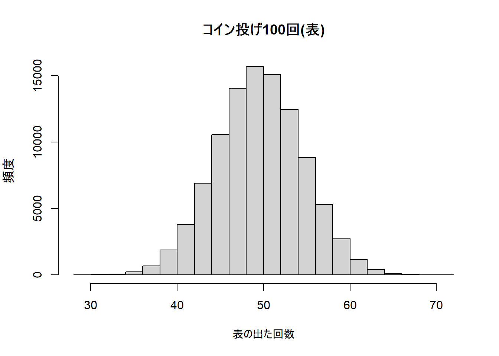
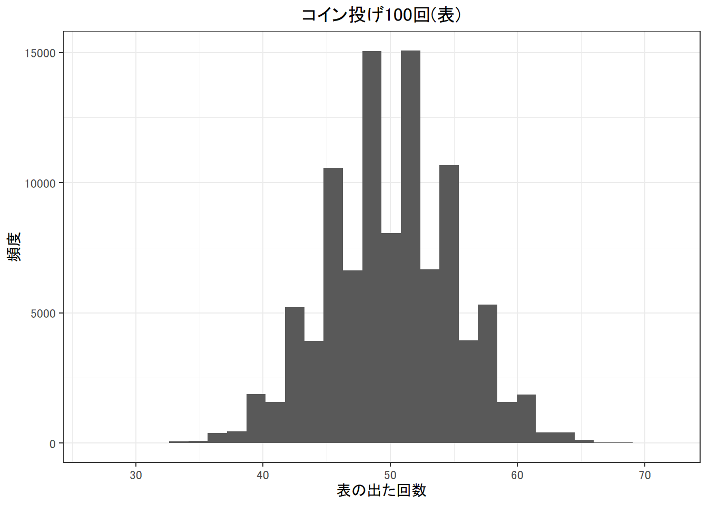
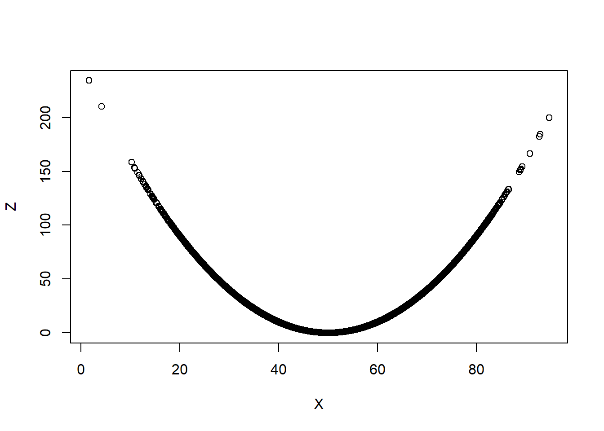
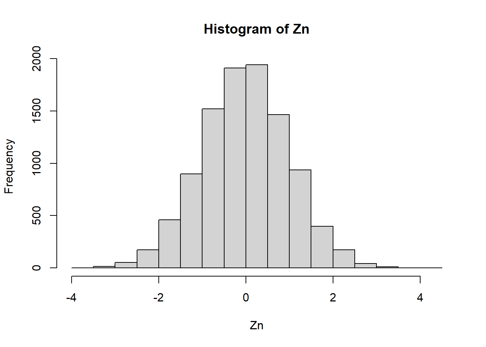
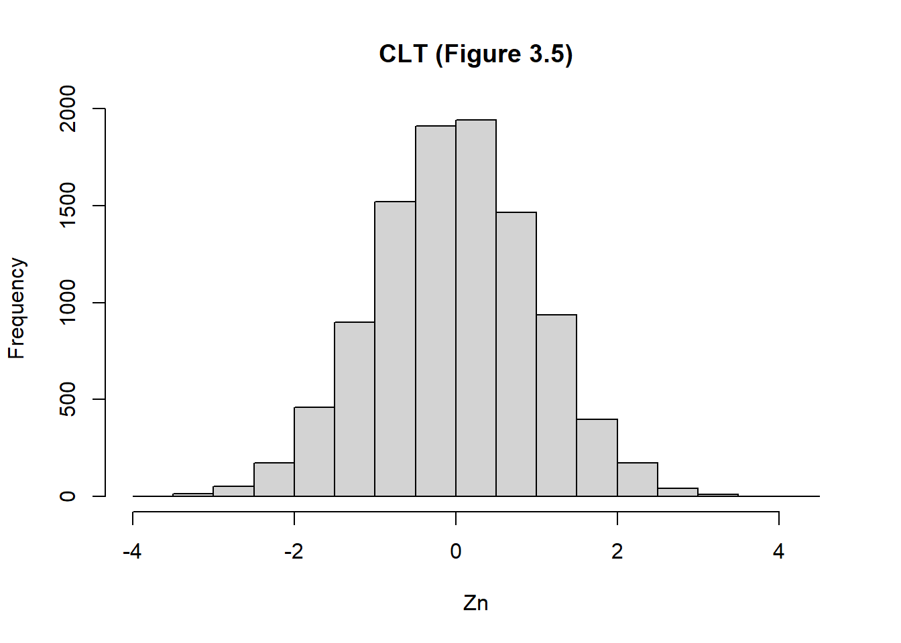

Week3 | Rによる自主勉強会
伊﨑 直志
2023年10月27日
準備
Loading Packages
library(tidyverse)## Warning: パッケージ 'tidyverse' はバージョン 4.1.3 の R の下で造られました## -- Attaching packages --------------------------------------- tidyverse 1.3.2 --
## v ggplot2 3.3.5 v purrr 0.3.4
## v tibble 3.1.8 v dplyr 1.0.10
## v tidyr 1.2.0 v stringr 1.4.0
## v readr 2.1.2 v forcats 0.5.1## Warning: パッケージ 'ggplot2' はバージョン 4.1.2 の R の下で造られました## Warning: パッケージ 'tidyr' はバージョン 4.1.3 の R の下で造られました## Warning: パッケージ 'readr' はバージョン 4.1.3 の R の下で造られました## Warning: パッケージ 'dplyr' はバージョン 4.1.3 の R の下で造られました## -- Conflicts ------------------------------------------ tidyverse_conflicts() --
## x dplyr::filter() masks stats::filter()
## x dplyr::lag() masks stats::lag()library(dplyr)
library(gridExtra)##
## 次のパッケージを付け加えます: 'gridExtra'
##
## 以下のオブジェクトは 'package:dplyr' からマスクされています:
##
## combinewindowsFonts(family_sans = windowsFont("Noto Sans JP"))
par(family = "family_sans")
knitr::opts_chunk$set(echo = TRUE)第3章 確率論の基礎
3.1. 事象と確率
3.1.1. 試行と事象
#コイン投げ
coin <- c("Head","Tail")
sample(coin, 100, replace = TRUE) #sample(標本/範囲, 抽出個数) #, replace = TRUE 復元抽出## [1] "Head" "Head" "Head" "Tail" "Head" "Head" "Head" "Head" "Head" "Head"
## [11] "Tail" "Tail" "Tail" "Tail" "Head" "Tail" "Tail" "Tail" "Tail" "Tail"
## [21] "Tail" "Tail" "Tail" "Tail" "Head" "Head" "Tail" "Tail" "Tail" "Head"
## [31] "Tail" "Head" "Head" "Head" "Head" "Head" "Tail" "Head" "Tail" "Head"
## [41] "Head" "Head" "Tail" "Tail" "Tail" "Head" "Tail" "Tail" "Head" "Tail"
## [51] "Tail" "Tail" "Tail" "Tail" "Head" "Head" "Head" "Tail" "Head" "Head"
## [61] "Tail" "Head" "Tail" "Head" "Head" "Head" "Head" "Head" "Head" "Tail"
## [71] "Tail" "Tail" "Head" "Tail" "Head" "Tail" "Head" "Head" "Head" "Tail"
## [81] "Head" "Tail" "Tail" "Head" "Head" "Tail" "Tail" "Head" "Head" "Tail"
## [91] "Tail" "Head" "Head" "Tail" "Tail" "Head" "Tail" "Tail" "Tail" "Tail"3.1.2. コイン投げのシミュレーション
#コイン投げのシミュレーション
#P(A)=100!/50!50!=1/2^100
factorial(100)/factorial(50)^2/2^100 #factorial(), 階乗## [1] 0.07958924#Rを用いて確認
coin <- c(1, 0) #1 = "Head", 0 = "Tail"
z <- sample(coin, 100, replace = TRUE) #コイン投げ100回
sum(z) #コイン投げ100回で表が出た回数## [1] 55#繰り返し, forループ
S <- 100000 #コイン投げ100回×100000
rec <- numeric(S) #rec<-試行結果の記録
coin <- c(1, 0) #コイン表(=1),裏(=0)
for(i in 1:S){ #forループ
z <- sample(coin, 100, replace = TRUE)
rec[i]<-sum(z)
}
hist(rec, main = "コイン投げ100回(表)", xlab = "表の出た回数")
summary(rec)## Min. 1st Qu. Median Mean 3rd Qu. Max.
## 30.00 47.00 50.00 50.01 53.00 75.00#おまけ
library(ggplot2)
REC <- as.data.frame(rec)
ggplot(REC, aes(rec)) +
geom_histogram()## `stat_bin()` using `bins = 30`. Pick better value with `binwidth`.
hist(rec, main = "コイン投げ100回(表)", xlab = "表の出た回数")ggplot(REC,aes(rec)) +
geom_histogram()## `stat_bin()` using `bins = 30`. Pick better value with `binwidth`.
ggplot(REC,aes(rec)) +
geom_histogram(binwidth = 2)
3.1.3. 論理演算によるカウントの方法
(2>1) #2は1よりも大きい<-真## [1] TRUE(2>1000) #2は1000よりも大きい<-偽## [1] FALSE(200==100*2) #"="ではなく"=="## [1] TRUETRUE + TRUE #TRUE=1, FALSE=0## [1] 2TRUE + FALSE #TRUE=1,FALSE=0## [1] 1count <- (rec==50) #ちょうど50回表が出た
sum(count)## [1] 7947mean(count) #相対頻度## [1] 0.07947#理論値とおよそ同じ3.1.5. スクリプトまとめ
（略）
3.2. 確率変数と独立性
3.2.1. 事象の独立性
事象の独立性：事象A, Bが独立であることは、P(A⋀B)=P(A)*P(B)が成り立つことをいう。
3.2.2. 確率変数の独立性
確率変数 random variable：何らかの試行によって値が確定するような変数 離散確率変数, 連続確率変数 確率の独立性
3.2.3. 独立ではない例
#独立性の確認用スクリプト
S <- 100000 #シミュレーション回数
X <- rnorm(S, 50, 10) #Xを抽出
Y <- rnorm(S, 50, 10) #Yを抽出
Z <- X+Y #Zを構成
#P(X>70)*P(Z>100)
mean((X>70))*mean((Z>100)) ## [1] 0.01162055#P(X>70 かつ Z>100)
mean((X>70)*(Z>100))## [1] 0.02293mean(X>70)## [1] 0.023213.2.4. 独立性と相関係数
X <- rnorm(100000, 50, 10); Y <- rnorm(100000, 50, 10)
cor(X, Y)## [1] -0.001273821Z <- (X-50)^2/10
cor(X, Z)## [1] -0.0007267975plot(X, Z)
3.3. 期待値と条件付期待値
3.3.1. 分布関数
curve(pnorm(x, 50, 10), 0, 100)
pnorm(60, 50, 10)-pnorm(40, 50, 10) #「Xが40より大きく60以下の値をとる」## [1] 0.68268953.3.2. 確率密度
特定の値aをとる確率P(X = a)
#Fx(a+h)-Fx(a)
pnorm(50 + 0.1, 50, 10) - pnorm(50, 50, 10) #X = 50となる確率P(X = 50)## [1] 0.003989356#X = 50の確率0
#確率をhで割って正規化, 表3.1
#確率密度関数
dnorm(50, 50, 10) #Xが正規分布N(50, 10^2)に従うとき、X = 50となる確率密度## [1] 0.03989423dnorm(80, 50, 10) #X = 80となる確率密度## [1] 0.0004431848#X = 80となる確率は、X = 50となる確率よりも小さい
curve(dnorm(x, 50, 10), 0, 100)
3.3.3. 期待値・分散
3.3.4. 条件付確率密度・条件付期待値
3.3.5. 同時確率密度
3.3.6. 共分散
3.3.7. データによる条件期待値の推定
malesdata <- read.csv("wage.csv")
head(malesdata)| educ | exper | wage |
|---|---|---|
| 7 | 16 | 548 |
| 12 | 9 | 481 |
| 12 | 16 | 721 |
| 11 | 10 | 250 |
| 12 | 16 | 729 |
| 12 | 8 | 500 |
summary(malesdata)## educ exper wage
## Min. : 1.00 Min. : 0.000 Min. : 100.0
## 1st Qu.:12.00 1st Qu.: 6.000 1st Qu.: 394.2
## Median :13.00 Median : 8.000 Median : 537.5
## Mean :13.26 Mean : 8.856 Mean : 577.3
## 3rd Qu.:16.00 3rd Qu.:11.000 3rd Qu.: 708.8
## Max. :18.00 Max. :23.000 Max. :2404.0plot(malesdata)sch12 <- malesdata[malesdata$school==12, ] #高校卒業者の抜き出し
malesdata$school## NULLmalesdata$exper## [1] 16 9 16 10 16 8 9 9 10 11 13 8 7 13 9 4 16 9 10 14 8 10 11 10
## [25] 14 10 8 8 7 9 7 7 2 10 11 8 15 10 15 7 16 11 11 17 6 2 6 6
## [49] 5 7 8 14 8 9 9 6 8 10 13 16 6 9 12 6 8 0 12 8 7 7 17 8
## [73] 7 3 6 4 6 9 6 6 8 14 7 7 10 1 3 4 6 7 10 7 5 13 7 2
## [97] 8 4 4 12 4 8 7 11 9 12 10 12 5 15 8 4 5 6 8 8 7 6 9 6
## [121] 8 6 16 15 8 5 14 3 6 7 8 11 10 9 6 3 7 9 8 7 7 8 12 15
## [145] 4 16 9 7 13 4 7 8 2 7 3 2 1 4 6 5 4 7 6 6 4 13 9 9
## [169] 7 9 3 6 5 13 16 15 9 10 12 9 8 13 6 6 7 3 6 11 13 9 10 10
## [193] 3 3 8 5 3 10 9 10 5 11 6 9 10 10 14 14 10 6 6 9 16 16 16 14
## [217] 6 4 16 9 7 13 8 8 4 4 7 3 12 11 3 9 8 15 2 6 5 5 11 8
## [241] 8 16 3 3 1 1 4 3 7 6 6 15 14 6 14 15 13 15 12 18 7 7 14 8
## [265] 8 2 17 13 10 6 5 2 12 7 8 6 16 19 19 2 12 7 15 9 15 2 7 2
## [289] 2 6 11 5 17 20 13 8 8 7 11 9 10 1 14 10 5 13 4 10 7 6 19 7
## [313] 6 10 8 7 7 3 12 7 6 8 7 7 4 9 15 6 4 7 9 11 9 5 4 13
## [337] 7 6 4 11 3 10 7 9 10 9 8 4 6 11 8 10 12 16 4 9 4 11 14 14
## [361] 10 2 6 6 7 6 13 10 5 6 3 3 14 16 14 8 14 17 14 14 5 3 9 6
## [385] 0 4 6 16 14 10 6 8 9 5 4 10 4 6 4 9 5 15 6 11 2 15 13 13
## [409] 16 9 6 9 2 15 15 7 10 4 2 5 6 6 4 5 5 11 6 15 12 7 2 7
## [433] 4 7 4 8 7 5 2 1 7 3 9 10 8 8 5 5 6 7 2 4 5 2 14 8
## [457] 4 4 11 6 8 2 17 2 8 10 12 2 10 1 5 11 9 10 10 12 10 13 10 6
## [481] 7 13 8 15 4 7 8 16 13 6 7 16 7 6 5 11 6 7 5 2 5 8 9 8
## [505] 9 10 12 8 12 9 10 7 7 6 4 9 6 5 10 7 9 8 15 10 14 8 8 18
## [529] 8 9 9 10 8 11 3 11 8 7 16 9 2 3 17 6 9 16 7 7 11 9 6 3
## [553] 6 2 2 14 10 5 10 9 16 8 16 16 13 10 8 9 6 13 9 12 8 8 6 7
## [577] 6 9 10 8 15 10 11 9 2 13 10 6 4 9 8 7 11 3 15 8 4 7 4 5
## [601] 15 16 10 16 8 9 7 5 11 11 10 11 16 8 8 13 6 4 7 13 18 16 7 2
## [625] 10 9 18 7 4 10 10 4 16 15 4 13 16 16 10 12 5 6 10 10 6 3 5 16
## [649] 15 13 9 6 6 12 1 9 6 5 10 9 7 5 6 1 7 7 10 10 8 19 12 13
## [673] 11 8 5 10 10 14 6 3 2 8 13 14 3 4 11 2 3 8 6 9 1 11 8 10
## [697] 14 6 11 9 6 8 6 10 5 7 9 6 10 8 19 16 6 7 10 9 15 9 7 6
## [721] 9 6 10 7 5 11 7 12 12 6 9 8 7 10 3 5 10 19 6 10 10 6 4 9
## [745] 4 2 3 0 8 12 6 3 6 6 19 6 9 9 7 4 6 9 4 7 6 4 2 13
## [769] 9 10 7 9 5 10 8 7 20 1 6 2 6 9 11 7 6 7 3 7 9 9 6 6
## [793] 5 16 3 18 11 9 7 3 5 7 12 11 12 12 9 13 11 7 5 13 8 7 8 9
## [817] 6 7 4 1 2 11 1 4 10 6 3 10 6 6 11 10 8 10 11 14 7 6 11 11
## [841] 8 14 9 13 13 2 11 7 9 8 12 9 9 8 17 17 8 5 0 11 14 7 11 8
## [865] 6 1 14 7 13 11 11 12 7 12 9 9 5 4 9 7 9 6 7 15 7 7 10 9
## [889] 12 8 4 7 10 13 9 9 16 11 3 2 15 14 7 5 12 15 8 6 4 7 7 5
## [913] 6 6 13 7 8 7 7 20 2 6 14 8 5 7 7 4 8 15 10 13 6 2 7 11
## [937] 16 6 9 10 6 7 12 15 5 11 5 3 11 6 6 11 6 5 8 9 6 5 3 8
## [961] 10 10 8 4 2 12 15 10 10 7 4 4 12 3 11 9 6 4 9 3 6 7 7 8
## [985] 5 14 7 15 4 3 10 12 8 6 8 16 7 5 3 4 7 13 4 11 14 7 16 2
## [1009] 6 7 9 3 9 6 3 10 14 6 2 7 11 7 8 6 6 6 2 4 2 6 6 16
## [1033] 8 9 20 7 2 5 6 9 2 12 10 6 14 17 13 5 8 6 6 8 12 8 10 2
## [1057] 16 7 7 7 2 14 11 15 10 12 3 8 6 8 14 8 8 4 0 6 15 9 9 7
## [1081] 2 6 10 8 11 9 7 14 13 5 5 11 12 16 15 0 13 0 7 8 4 6 3 5
## [1105] 10 9 8 6 6 12 6 8 5 14 3 15 9 14 15 15 13 10 10 13 8 7 6 6
## [1129] 15 16 7 8 3 8 16 4 8 6 15 8 6 12 10 8 9 16 7 13 4 1 5 4
## [1153] 13 4 7 5 4 17 10 10 9 5 10 10 10 12 2 6 5 3 13 3 14 7 12 4
## [1177] 5 4 7 14 10 12 8 3 2 8 6 7 7 14 11 15 9 6 20 10 10 10 6 13
## [1201] 9 5 10 3 11 15 6 12 16 9 7 11 10 7 9 5 5 8 11 3 6 7 11 13
## [1225] 12 19 19 13 15 6 16 8 4 7 6 13 12 3 9 2 4 1 10 8 8 12 8 11
## [1249] 9 5 6 10 8 14 10 5 9 12 2 5 14 15 12 7 16 11 11 7 8 9 14 6
## [1273] 9 9 9 5 10 10 4 8 9 10 6 3 14 14 6 2 11 12 9 7 16 6 4 14
## [1297] 13 16 2 6 6 12 12 5 19 5 8 9 5 1 6 13 2 5 8 6 10 15 6 10
## [1321] 11 13 7 15 6 6 10 10 10 16 7 5 11 13 9 5 2 7 7 6 9 10 6 2
## [1345] 13 14 7 11 4 13 5 9 9 2 7 5 14 10 8 3 2 9 8 9 19 11 6 5
## [1369] 5 18 3 10 9 8 6 8 7 13 8 7 15 10 8 6 7 9 4 7 6 13 9 15
## [1393] 5 6 16 8 4 6 7 11 13 6 10 8 7 8 4 10 10 8 12 14 8 8 18 4
## [1417] 10 4 7 14 12 9 6 7 12 14 16 7 10 15 6 10 7 5 11 7 5 12 2 7
## [1441] 10 5 15 16 11 11 4 7 12 10 7 8 8 7 3 14 7 11 10 16 14 13 8 13
## [1465] 8 15 13 5 4 7 7 14 7 5 5 14 11 5 3 16 10 9 14 8 5 2 6 14
## [1489] 15 9 3 14 5 11 5 7 3 16 7 8 16 6 9 12 4 19 16 6 3 6 9 6
## [1513] 13 14 6 6 3 6 15 4 5 7 9 8 8 8 16 11 12 8 8 4 9 5 9 12
## [1537] 5 7 13 7 7 3 16 12 9 7 12 8 12 9 5 5 7 9 18 7 6 10 5 4
## [1561] 2 16 12 14 3 7 10 9 13 11 12 8 10 18 12 13 12 14 8 11 7 8 10 9
## [1585] 14 12 7 14 5 17 9 16 12 8 14 5 8 6 9 11 8 5 7 10 7 3 16 6
## [1609] 6 5 4 6 3 6 6 4 5 6 7 6 8 7 13 10 13 4 8 14 5 6 5 6
## [1633] 5 4 8 9 10 9 21 10 14 6 8 9 8 23 10 6 15 11 2 17 13 6 14 12
## [1657] 9 5 7 6 18 4 10 4 8 17 8 13 6 3 11 9 12 18 6 9 9 9 6 16
## [1681] 15 3 7 8 10 11 4 5 10 15 8 4 17 10 16 5 11 14 11 8 4 10 13 4
## [1705] 22 8 9 13 14 8 10 7 13 8 15 8 9 1 5 7 3 8 13 8 10 6 8 2
## [1729] 13 6 4 7 12 5 6 7 2 6 3 13 12 10 8 6 3 2 5 15 9 8 7 19
## [1753] 16 5 15 4 6 12 5 2 4 1 14 6 13 9 5 11 10 5 15 8 8 3 13 8
## [1777] 20 9 12 10 8 3 6 18 5 16 18 5 15 12 8 6 10 6 15 16 6 10 8 6
## [1801] 0 7 15 15 15 19 10 6 7 12 6 10 16 11 20 16 9 9 9 5 7 11 14 5
## [1825] 7 6 16 8 8 16 3 8 8 15 6 17 10 2 12 7 10 18 7 14 13 3 3 10
## [1849] 5 6 19 7 10 16 6 13 6 5 8 5 7 7 19 13 12 10 15 8 7 10 16 6
## [1873] 11 5 10 12 8 8 5 6 5 6 14 7 5 5 2 4 8 5 9 4 14 7 11 15
## [1897] 5 8 9 10 10 6 8 18 16 13 1 11 10 12 12 4 14 21 12 11 7 8 9 11
## [1921] 7 8 10 14 9 15 11 3 5 5 7 18 15 8 14 10 6 19 5 5 7 9 10 7
## [1945] 15 13 9 4 15 5 5 2 12 14 8 15 4 7 19 9 8 12 8 10 17 15 12 14
## [1969] 13 4 6 9 9 13 12 10 9 13 14 18 10 11 5 6 14 6 4 6 5 10 3 20
## [1993] 6 6 15 4 6 16 5 13 10 7 8 7 11 8 7 7 14 7 6 10 6 7 9 10
## [2017] 14 8 14 11 8 13 12 6 12 7 6 6 4 3 14 14 21 11 10 9 15 13 16 18
## [2041] 4 8 9 8 10 8 7 1 9 7 5 19 4 8 7 7 18 12 11 7 14 18 4 9
## [2065] 16 19 7 3 4 16 8 6 15 17 12 6 4 9 8 6 9 9 12 8 6 4 14 15
## [2089] 7 8 7 11 9 20 6 8 5 5 13 10 5 1 10 7 8 14 7 15 5 10 14 4
## [2113] 2 14 8 6 5 7 15 7 4 9 9 11 7 5 10 2 7 4 8 10 11 8 6 4
## [2137] 7 11 8 8 6 7 7 6 3 11 8 10 8 4 7 12 5 9 6 5 7 16 11 5
## [2161] 8 13 16 5 10 11 12 8 11 6 15 6 14 9 6 16 3 7 12 11 7 11 13 7
## [2185] 3 15 6 5 8 2 8 7 9 8 13 6 6 7 7 7 8 9 8 11 11 8 10 8
## [2209] 1 14 11 11 8 15 20 5 5 4 3 13 10 5 5 5 5 5 8 11 11 8 6 5
## [2233] 2 9 10 19 11 10 10 7 5 14 8 9 5 7 7 13 9 2 14 3 8 9 10 12
## [2257] 10 6 6 8 3 4 2 6 4 11 7 7 9 4 1 4 6 15 6 6 4 6 6 7
## [2281] 6 6 8 16 6 11 10 13 10 8 7 9 6 6 9 11 14 8 10 13 16 12 14 4
## [2305] 15 6 16 11 8 10 13 14 7 7 3 5 6 9 14 4 5 15 12 6 2 2 8 15
## [2329] 12 11 12 17 3 4 2 12 15 11 8 4 6 9 3 10 16 7 7 10 9 6 8 9
## [2353] 9 7 5 3 13 11 4 16 16 9 3 7 7 11 10 5 7 3 4 15 9 13 6 9
## [2377] 7 10 7 4 12 11 6 11 10 7 6 3 13 10 4 16 9 12 3 10 7 10 14 8
## [2401] 4 8 4 15 12 7 18 9 10 8 4 1 17 14 7 3 10 10 15 13 13 7 7 11
## [2425] 14 8 6 4 7 13 5 5 3 5 6 7 15 3 7 7 4 8 7 15 7 3 7 5
## [2449] 7 11 11 9 5 8 18 13 18 2 11 15 12 0 8 8 15 11 9 10 8 10 7 4
## [2473] 8 13 5 5 12 9 16 7 6 7 11 3 3 11 8 9 3 5 8 7 13 8 10 5
## [2497] 10 7 10 7 7 3 9 3 10 12 10 3 6 6 9 5 10 9 6 12 9 7 4 10
## [2521] 7 17 7 6 14 9 3 14 18 8 10 15 8 9 9 17 10 8 7 9 3 4 18 17
## [2545] 15 10 6 9 6 6 7 6 6 8 9 8 9 19 9 11 9 11 6 9 7 11 8 11
## [2569] 10 6 15 13 9 6 13 6 9 10 2 2 14 16 10 18 17 6 9 11 10 6 12 10
## [2593] 8 4 17 10 9 15 16 15 6 6 9 8 9 9 3 9 8 5 12 9 12 7 14 6
## [2617] 7 16 13 3 6 9 5 5 15 11 9 14 4 2 15 16 9 10 13 6 10 6 7 22
## [2641] 2 11 15 5 14 6 5 2 11 16 14 9 15 4 9 15 3 7 6 14 7 3 10 8
## [2665] 8 8 6 10 8 11 8 16 16 6 9 6 6 7 2 15 9 17 18 15 16 6 9 15
## [2689] 19 6 13 10 18 16 8 3 8 10 10 8 7 12 14 11 8 10 8 9 20 13 7 7
## [2713] 3 18 4 8 12 13 11 7 22 7 7 6 7 12 11 12 9 13 10 8 23 4 4 3
## [2737] 15 13 4 8 16 3 9 10 9 12 9 9 8 8 4 7 3 7 16 12 8 9 8 10
## [2761] 4 8 4 7 2 11 4 8 9 6 5 4 17 7 13 12 8 11 8 9 15 8 18 8
## [2785] 11 6 17 5 8 6 8 8 6 8 12 3 6 6 9 6 9 16 9 3 7 14 6 21
## [2809] 8 9 9 17 10 10 9 10 9 11 10 12 7 21 6 20 16 10 8 9 12 8 14 18
## [2833] 11 12 10 6 16 8 17 8 16 15 12 13 8 10 8 18 18 5 5 7 14 10 17 12
## [2857] 15 7 2 16 20 18 8 8 10 4 9 10 18 9 17 10 12 7 17 18 17 12 7 14
## [2881] 7 4 7 8 6 8 8 8 3 18 13 16 9 7 3 11 13 14 15 9 22 19 9 9
## [2905] 8 9 7 10 16 10 2 7 20 12 9 5 17 17 7 4 2 2 5 4 11 5 5 6
## [2929] 14 7 2 3 4 3 9 6 11 8 14 11 4 3 9 14 6 12 14 9 7 8 5 4
## [2953] 6 10 10 15 9 12 13 9 18 16 15 9 7 6 11 6 10 15 7 9 9 13 11 14
## [2977] 11 14 12 3 8 12 12 6 8 8 3 7 15 10 21 15 11 9 7 14 14 8 11 4
## [3001] 8 8 5 6 6 7 15 6 13 7mean(sch12$wage)## [1] NaNsch16 <- malesdata[malesdata$school==16, ] #学部卒業者の抜き出し
exp(mean(sch12$wage)) #高校卒業者の平均賃金## [1] NaNexp(mean(sch16$wage)) #学部卒業者の平均賃金## [1] NaN#学部卒業者よりも高校卒業者の平均賃金が高くなっている
#正しい推定
malesdata <- read.csv("wage.csv")
sch11 <- malesdata[malesdata$school==11, ] #高校未満の抜き出し
sch12 <- malesdata[malesdata$school>=12, ] #高卒以上の抜き出し
exp(mean(sch11$wage)) #高卒未満の平均賃金## [1] NaNexp(mean(sch12$wage)) #高卒以上の平均賃金## [1] NaN3.4. 中心極限定理
3.4.1. 中心極限定理と信頼区間
中心極限定理 -> 信頼区間 ### 3.4.2. 中心極限定理のシミュレーション
X <- rnorm(10000, 50, 10)
Xbar <- mean(X); Sn <- var(X) #標本平均、標本分散
Zn <- sqrt(10000)*(Xbar-50)/sqrt(Sn)
#中心極限定理、繰り返し計算シミュレーション
S <- 10000 #シミュレーション回数
n <- 10000 #標本の大きさ
Zn <- numeric(S) #結果記録用のリスト
for(i in 1:S){ #繰り返し開始
X <- rnorm(n, 50, 10) #N(50,10)から標本抽出
Xbar <- mean(X)
Sn <- var(X)
Zn[i] <- sqrt(n)*(Xbar-50)/sqrt(Sn)
} #繰り返し終了
hist(Zn) #ヒストグラム作成
hist(Zn, main = "CLT (Figure 3.5)") #ヒストグラム作成
3.4.3. 信頼区間のシミュレーション
S <- 10000
n <- 10000
rec <- numeric(S)
for(i in 1:S){
X <- rnorm(n, 50, 10)
Xbar <- mean(X); Sn <- var(X)
rec[i] <- (Xbar - 1.96*sqrt(Sn/n) < 50)*(50 < Xbar + 1.96*sqrt(Sn/n))
}
mean(rec)## [1] 0.95323.4.4. 信頼区間の導出
pnorm(50 + (1.96*10), 50, 10) - pnorm(50 - (1.96*10), 50, 10)## [1] 0.9500042練習問題
問題3.1.
（skip）
問題3.2.
data <- read.csv("temperature.csv")問題3.2.1.
mean(data$temp) #気温平均## [1] 16.64065問題3.2.2.
mean(data$temp[1:100]) #気温平均（100番目まで）## [1] 7.204mean(data$temp); mean(data$temp[1:100]) #1と比較## [1] 16.64065## [1] 7.204問題3.2.3.
sample(data$temp, 100) #無作為抽出## [1] 22.8 16.4 21.0 2.2 10.1 2.5 30.3 4.0 24.6 27.0 18.5 9.5 23.2 28.2 23.5
## [16] 19.6 19.7 15.2 14.9 21.5 19.2 22.0 1.3 2.0 10.0 20.0 20.9 16.8 17.8 16.3
## [31] 7.1 20.9 20.2 25.0 11.4 22.9 9.5 13.4 5.7 18.7 16.6 7.8 0.7 11.6 5.8
## [46] 17.8 7.7 4.1 20.3 21.1 4.3 21.6 9.7 24.4 24.1 24.9 20.2 10.9 27.6 22.4
## [61] 17.9 8.0 26.6 13.3 24.0 26.8 19.7 27.9 23.0 28.5 15.8 6.2 4.0 3.2 18.8
## [76] 18.3 24.5 27.4 5.0 11.9 24.0 23.4 26.0 20.9 23.1 23.0 18.9 17.1 13.8 7.1
## [91] 16.4 23.3 34.3 13.8 8.6 21.0 24.1 16.1 26.0 25.9mean(sample(data$temp, 100))## [1] 16.256mean(data$temp); mean(sample(data$temp, 100)) #1と比較## [1] 16.64065## [1] 17.105問題3.2.4.
違いがなぜ生じたのか（略）
問題3.3.
問題3.3.1.
data2 <- read.csv("icecream.csv", fileEncoding = "utf8")
max(data2$icecream)## [1] 10059which.max(data2$icecream)## [1] 17data2$city[which.max(data2$icecream)] #17番目は富山市## [1] "富山市"問題3.3.2.
x <- data2$icecream
y <- data2$income
plot(x, y, main = "Figure 3.2.2.")cor(x, y)## [1] 0.3113555問題3.3.3.
z <- data2$u15
plot(x, z, main = "Figure 3.2.3.")cor(x, z)## [1] -0.05910997問題3.3.4
（略）
問題3.4.
問題3.4.1.
S <- 1000
X <- rnorm(S, 50, 10)
rec<-numeric(S)
for(i in 1:S){
rec[i]<-(X[i]>10)
}
mean(rec)## [1] 1問題3.4.2.
S <- 1000
X <- rnorm(S, 50, 10)
rec <- numeric(S)
for(i in 1:S){
rec[i] <- (-10<X[i])&(X[i]<10)
}
mean(rec)## [1] 0問題3.4.3.
S <- 1000
X <- rnorm(S, 50, 10)
Y <- rnorm(S, 50, 10)
rec <- numeric(S)
for(i in 1:S){
rec[i] <- (X[i]>Y[i]^2)
}
mean(rec)## [1] 0問題3.4’.（10000でシミュレーション）
問題3.4’.1.
S <- 10000
n <- 10000
X <- rnorm(n, 50, 10)
Y <- rnorm(n, 50, 10)
rec <- numeric(S)
for(i in 1:S){
rec[i] <- (10 < X[i])
}
mean(rec)## [1] 0.9999#recの中身
#X[1]
#10 < X[i]
#rec[1] <- 10 < X[i]
#rec[1]問題3.4’.2.
for(i in 1:S){
rec[i] <- (-10 < X[i]) & (X[i] < 10)
}
mean(rec)## [1] 1e-04問題3.4’.3.
for(i in 1:S){
rec[i] <- (X[i] > Y[i]^2)
}
mean(rec)## [1] 0問題3.5.
S <- 10000
n <- 10000
rec <- numeric(S)
for(i in 1:S){
X <- rnorm(n, 50, 10)
Xbar <- mean(X)
Vn <- var(X)
Sn <- var(X)
rec[i] <- (Xbar - 1.64*sqrt(Sn/n) <50)&(50 < Xbar + 1.64*sqrt(Sn/n))
}
mean(rec)## [1] 0.9033